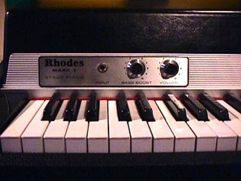

The Fender Mustang was introduced in 1964 as the basis of a major redesign of Fender's...
The Fender Stratocaster or "Strat" is one of the most popular electric guitars of all time ...
The Gibson Les Paul is a solid body electric guitar that was first sold in 1952...
|  | The Rhodes piano enjoyed a resurgence of popularity beginning in the 1990s — with contemporary artists highlighting the instrument, including Portishead, D'Angelo, Erykah Badu,[2] Chick Corea, Jamiroquai, Herbie Hancock, Steely Dan and Stevie Wonder. In the late 1960s, along with other electric pianos from Wurlitzer and Baldwin, the Rhodes piano had allowed music classes for the first time' to incorporate the piano — with earphones enabling multiple students in the same room to effectively learn the instrument without disturbing each other. | $1400 |
| The Rhodes piano enjoyed a resurgence of popularity beginning in the 1990s — with contemporary artists highlighting the instrument, including Portishead, D'Angelo, Erykah Badu,[2] Chick Corea, Jamiroquai, Herbie Hancock, Steely Dan and Stevie Wonder. In the late 1960s, along with other electric pianos from Wurlitzer and Baldwin, the Rhodes piano had allowed music classes for the first time' to incorporate the piano — with earphones enabling multiple students in the same room to effectively learn the instrument without disturbing each other. | $1400 | |
| The Rhodes piano enjoyed a resurgence of popularity beginning in the 1990s — with contemporary artists highlighting the instrument, including Portishead, D'Angelo, Erykah Badu,[2] Chick Corea, Jamiroquai, Herbie Hancock, Steely Dan and Stevie Wonder. In the late 1960s, along with other electric pianos from Wurlitzer and Baldwin, the Rhodes piano had allowed music classes for the first time' to incorporate the piano — with earphones enabling multiple students in the same room to effectively learn the instrument without disturbing each other. | $1400 |